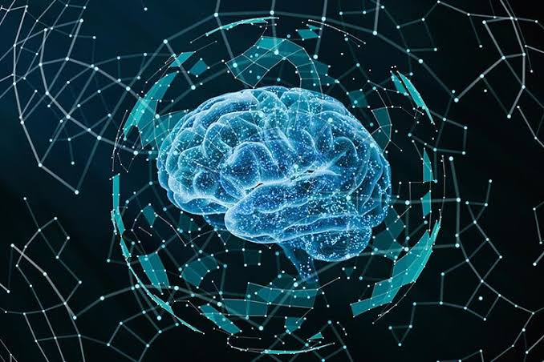

Áreas de Innovación Tecnológica
A continuación se describen los pilares fundamentales que integran el ecosistema de la transformación digital moderna:
- Inteligencia Artificial (IA): Sistemas computacionales diseñados para simular capacidades cognitivas humanas.
- Machine Learning (Aprendizaje automatizado)
- Procesamiento de Lenguaje Natural (PLN)

- Internet de las Cosas (IoT): Red de objetos físicos interconectados que recopilan y configuran datos en tiempo real.
- Sensores inteligentes integrados
- Microcontroladores de bajo consumo
- Ciberseguridad: Práctica crítica dedicada a salvaguardar la confidencialidad e integridad de la infraestructura digital.
- Encriptación simétrica y asimétrica
- Protocolos seguros de transferencia de datos
Proceso de Adopción de Innovación Digital
Secuencia recomendada para la integración tecnológica en entornos profesionales:
- Identificación de necesidades operativas estratégicas.
- Investigación y análisis de tecnologías emergentes candidatas.
- Desarrollo de prototipos controlados y entornos de prueba.
- Auditoría técnica de infraestructura y ciberseguridad.
- Despliegue e integración en el entorno de producción.